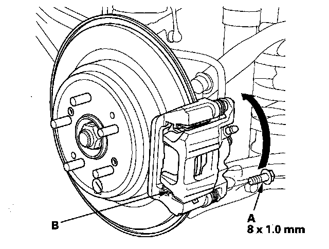
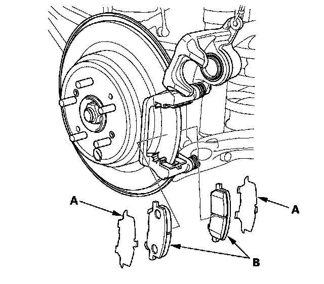
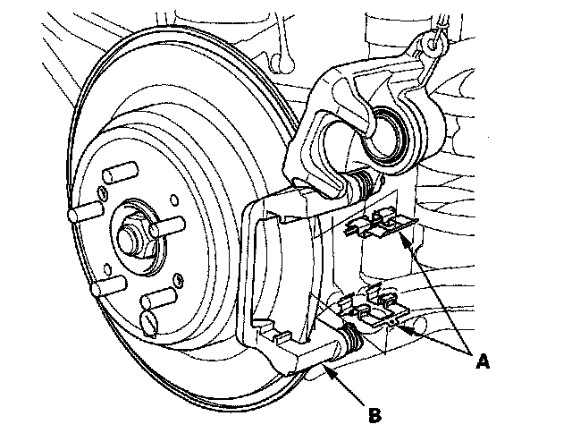
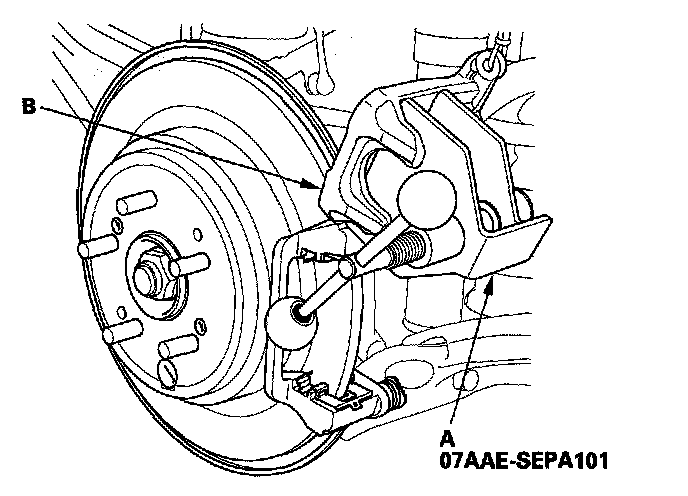
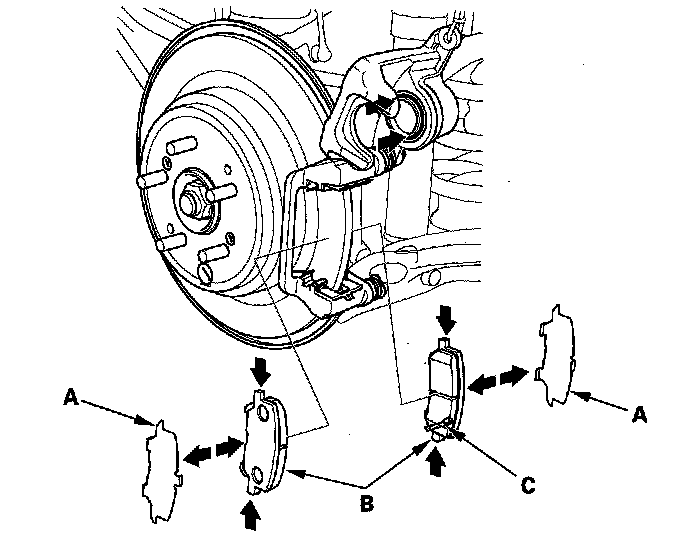
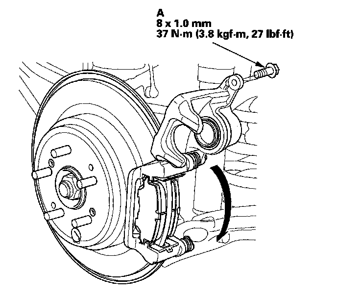

Rear/Removal
Rear Brake Pad Inspection and ReplacementSpecial Tools Required
Brake caliper piston compressor 07AAE-SEPA101
CAUTION: Frequent inhalation of brake pad dust, regardless of material composition, could be hazardous to your health.
^ Avoid breathing dust particles.
^ Never use an air hose or brush to clean brake assemblies. Use an OSHA-approved vacuum cleaner.
Replacement
1. Remove some brake fluid from the master cylinder.
2. Raise the rear of the vehicle, and support it with safety stands in the proper locations.
3. Remove the rear wheels.
4. Remove the flange bolt (A), and pivot the caliper (B) up out of the way. Check the hose and pin boots for damage and deterioration.

5. Remove the pad shims (A) and brake pads (B).

6. Remove the pad retainers (A).
NOTE: The upper and lower pad retainers are different. During installation, make sure the pad retainers are in their proper positions.

7. Clean the caliper bracket (B) thoroughly; remove any rust, and check for grooves and cracks.
8. Inspect the brake disc/drum, and check for damage and cracks.
9. Install the pad retainers. Wipe excess assembly paste off the retainers. Keep the assembly paste off the discs and pads.
10. Mount the brake caliper piston compressor (A) on the caliper body (B).

11. Press in the piston with the brake caliper piston compressor so the caliper will fit over the brake pads. Make sure the piston boot is in position to prevent damaging it when pivoting the caliper down.
NOTE: Be careful when pressing in the piston; brake fluid might overflow from the master cylinder's reservoir. If brake fluid gets on any painted surface, wash it off immediately with water.
12. Remove the brake caliper piston compressor.
13. Apply a thin coat of M-77 assembly paste (P/N 08798-9010) to the pad side of the shims (A), the back of the brake pads (B), and the other areas indicated by the arrows. Wipe excess assembly paste off the pad shims and brake pads. Contaminated brake discs or brake pads reduce stopping ability. Keep grease and assembly paste off the brake discs and brake pads.

14. Install the brake pads and pad shims correctly. Install the brake pad with the wear indicator (C) on the bottom inside. If you are reusing the brake pads, always reinstall the brake pads in their original positions to prevent a momentary loss of braking efficiency.
15. Pivot the caliper down into position. Install the flange bolt (A), and tighten it to the specified torque.

16. Clean the mating surface of the brake disc/drum and the inside of the wheel, then install the rear wheels.
17. Press the brake pedal several times to make sure the brakes work.
NOTE: Engagement may require a greater pedal stroke immediately after the brake pads have been replaced as a set. Several applications of the brake pedal will restore the normal pedal stroke.
18. Add brake fluid as needed.
19. After installation, check for leaks at hose and line joints or connections, and retighten if necessary. Test-drive the vehicle, then check for leaks.